16 · 腿足与人形机器人：平衡、步态与全身控制
阅读目标：理解浮动基机器人“欠驱动 + 依赖接触”的本质；从质心动力学推出线性倒立摆、ZMP 与捕获点；了解模型预测控制与全身控制（WBC）的分层；以及强化学习行走策略和人形全身遥操作 / 动作重定向的接口。
1. 为什么腿足控制难
机械臂基座固定，关节力矩可直接决定末端运动；腿足和人形机器人的躯干（浮动基）没有执行器，只能通过脚与地面的接触力间接推动。接触是单边的（地面只能推不能拉）、受摩擦锥约束（12 章式 12.1），而且步态中接触不断切换。
| 符号 | 含义 | 维数 / 单位 |
|---|---|---|
| 浮动基位姿 + 关节角 | （位姿常用四元数表示时为 7+n） | |
| 选择矩阵 | ，只有关节受驱动 | |
| 接触雅可比、接触力 | 每个点接触 3 维 | |
| 质心位置与速度 | 米、m/s | |
| 绕质心的角动量 | kg·m²/s | |
| ZMP / 压力中心 | 地面上的点 | |
| 质心高度、倒立摆固有频率 | ||
| 捕获点（发散运动分量） | 地面坐标 |
2. 浮动基动力学与质心动力学
LaTeX 源码
M(q)\ddot q+h(q,\dot q)=S^\top\tau+J_c^\top\lambda.\tag{16.1}前 6 行（浮动基部分）没有 τ，只能由接触力 λ 驱动。这 6 行恰好等价于牛顿—欧拉方程作用于整个机器人：
推导 1 · 质心动力学方程
把机器人看作质点系，总质量 m，第 i 个接触点位置 、力 。对质心应用牛顿第二定律，对质心取角动量定理：
LaTeX 源码
m\ddot c=\sum_if_i+mg,\qquad\dot L=\sum_i(p_i-c)\times f_i.\tag{16.2}关节内力成对抵消，不出现在式中，所以“只靠关节”无法改变质心运动，必须借助接触力。这组 6 维方程是许多 MPC 的简化模型：把接触力当作决策变量，满足摩擦锥约束，预测未来质心轨迹，再由全身控制把期望接触力转为关节力矩。
3. 线性倒立摆、ZMP 与捕获点
推导 2 · 从质心动力学到 LIPM
假设：质心高度恒定 （），绕质心角动量变化可忽略（），所有接触在平地 z=0。由竖直方向 得 。由 的水平分量，合接触力必须指向质心，作用点（压力中心 p）与质心连线即力方向：
LaTeX 源码
\frac{f_x}{f_z}=\frac{c_x-p_x}{z_c}\ \Rightarrow\ \ddot c_x=\frac{f_x}{m}=\frac g{z_c}(c_x-p_x)=\omega^2(c_x-p_x).\tag{16.3}y 方向同理。这就是线性倒立摆模型（LIPM）：质心像倒立摆一样被“推离”压力中心，ω 决定发散速度。
ZMP 判据：压力中心只能位于支撑多边形（脚底接触区域的凸包）内，因为地面法向力非负。规划质心轨迹时要求对应的 始终在支撑多边形内，这就是经典 ZMP 步行规划（Kajita 预观控制）的约束。
推导 3 · 捕获点：一步停下来要踩哪里
LIPM 的解可分解为收敛与发散两部分。定义 ，对时间求导并代入式 (16.3)：
LaTeX 源码
\dot\xi=\dot c+\frac{\ddot c}{\omega}=\dot c+\omega(c-p)=\omega\left(c+\frac{\dot c}\omega-p\right)=\omega(\xi-p).\tag{16.4}ξ 只受 p 驱动且以 ω 指数发散；质心则以收敛方式跟随 ξ（）。若把压力中心放在 ξ（一步踩到 ξ），则 ，质心渐近停在 ξ 上方——ξ 因此称为捕获点（capture point）。
数值例： m，。被推后质心速度 0.5 m/s，则 m：需要在质心前方约 15 cm 落脚才能停下。若最大步长不足，需要多步或借助上身角动量（挥臂、弯腰）。
4. 分层控制架构

查看 Mermaid 图源码
flowchart TD U[任务指令: 速度 / 目标 / 遥操作] --> G[步态规划: 接触时序与落脚点] G --> M[质心 MPC: 单刚体 / 质心动力学, 预测 0.5–1 s] E[状态估计: IMU + 关节编码器 + 接触检测] --> M M --> W[全身控制 WBC: 带优先级 QP, 0.5–1 kHz] E --> W W --> J[关节力矩 / PD 目标] J --> R[机器人] R --> E
推导 4 · 全身控制作为二次规划
决策变量为广义加速度、接触力和关节力矩 。多个任务（质心加速度跟踪、躯干姿态、摆动脚轨迹、上肢操作）写成 的加速度目标：
LaTeX 源码
\begin{aligned}\min_{\ddot q,\lambda,\tau}\ &\sum_kw_k\left\|J_k\ddot q+\dot J_k\dot q-\ddot x_k^{des}\right\|^2+\epsilon\|\tau\|^2\\\text{s.t. }&M\ddot q+h=S^\top\tau+J_c^\top\lambda,\quad J_c\ddot q+\dot J_c\dot q=0,\\&\lambda\in\text{摩擦锥（棱锥线性化）},\quad\tau_{min}\le\tau\le\tau_{max}.\end{aligned}\tag{16.5}第二个等式约束要求支撑脚不滑动。权重法简单但任务会互相妥协；严格优先级可用级联 QP（先解高优先级，再在其最优解集合内解低优先级）。期望任务加速度通常由 PD 形式给出 。
5. 强化学习行走：接口与要点
近年四足与人形的鲁棒行走多由仿真 RL 训练（见 11 章）：
| 设计 | 常见选择 | 理由 |
|---|---|---|
| 观测 | IMU 角速度、重力方向投影、关节位置 / 速度、上一动作、指令、步态相位 | 都可在实机测得 |
| 特权信息（教师） | 地形高度图、摩擦、外力、接触状态 | 学生从历史推断 |
| 动作 | 关节目标偏移 | PD 跟踪，平滑稳定 |
| 频率 | 策略 50 Hz，PD 1 kHz 以上 | 策略推理与底层控制解耦 |
| 课程 | 地形难度随成功率提高 | 避免一开始就太难学不会 |
| 随机化 | 质量、摩擦、电机强度、延迟、外推 | 11 章表中的 Sim2Real 差距 |
PD 关节力矩 让策略的输出具有“弹簧”语义：策略输出的是平衡点而非力矩。 过高会放大仿真—实机差距，过低则跟踪滞后。电机力矩—速度曲线、电流限制必须在仿真中建模。
6. 人形：全身遥操作、动作重定向与行走—操作结合
人形机器人的目标通常是在人类环境中同时行走与操作。数据来源包括动作捕捉、视频人体姿态估计、VR 遥操作。
推导 5 · 人体动作重定向到人形
人体模型（如 SMPL）给出关节位置序列 。人形正运动学 。先拟合形状缩放 s，再逐帧求解：
LaTeX 源码
q_t^*=\arg\min_q\sum_kw_k\left\|P_k(q)-sP_k^h(t)\right\|^2+\beta\|q-q_{t-1}^*\|^2\quad\text{s.t. 关节限位}.\tag{16.6}运动学上可行不等于动力学可行：人的动作可能超出电机力矩或使 ZMP 越出支撑区。因此常再训练一个 RL 跟踪策略，以重定向后的参考动作为目标、奖励跟踪误差，并在仿真中筛掉不可行片段。部署时遥操作者的动作实时重定向后作为跟踪策略的指令。
行走—操作结合（loco-manipulation）常用分层：下肢策略负责平衡与移动，上肢由遥操作、IK 或学习的操作策略控制；或训练统一的全身策略，以末端目标与基座速度为指令。手部灵巧操作见 12 章。
7. 局限与实践提示
- LIPM 假设恒高度与零角动量，跑跳、上下楼梯需要更完整的质心 / 单刚体模型。
- 状态估计（躯干速度、接触）是腿足系统的隐性瓶颈；打滑与软地面会使接触检测失效。
- 人形安全：跌倒保护、力矩限制、急停与悬吊测试必须先于算法实验。
- RL 策略难以给出稳定性证明；用于产品时常与模型控制器结合或加入安全监控。
来源：Modern Robotics、Kajita et al.《Introduction to Humanoid Robotics》（LIPM、ZMP 预观控制）、Pratt et al. (2006) Capture Point、Di Carlo et al. (IROS 2018) 凸 MPC、Legged Gym 大规模并行 RL、ANYmal 复杂地形行走、H2O 人形全身遥操作、HumanPlus。